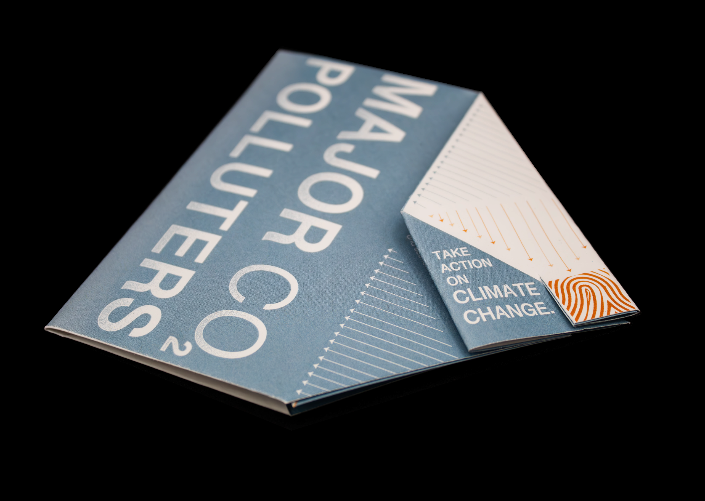
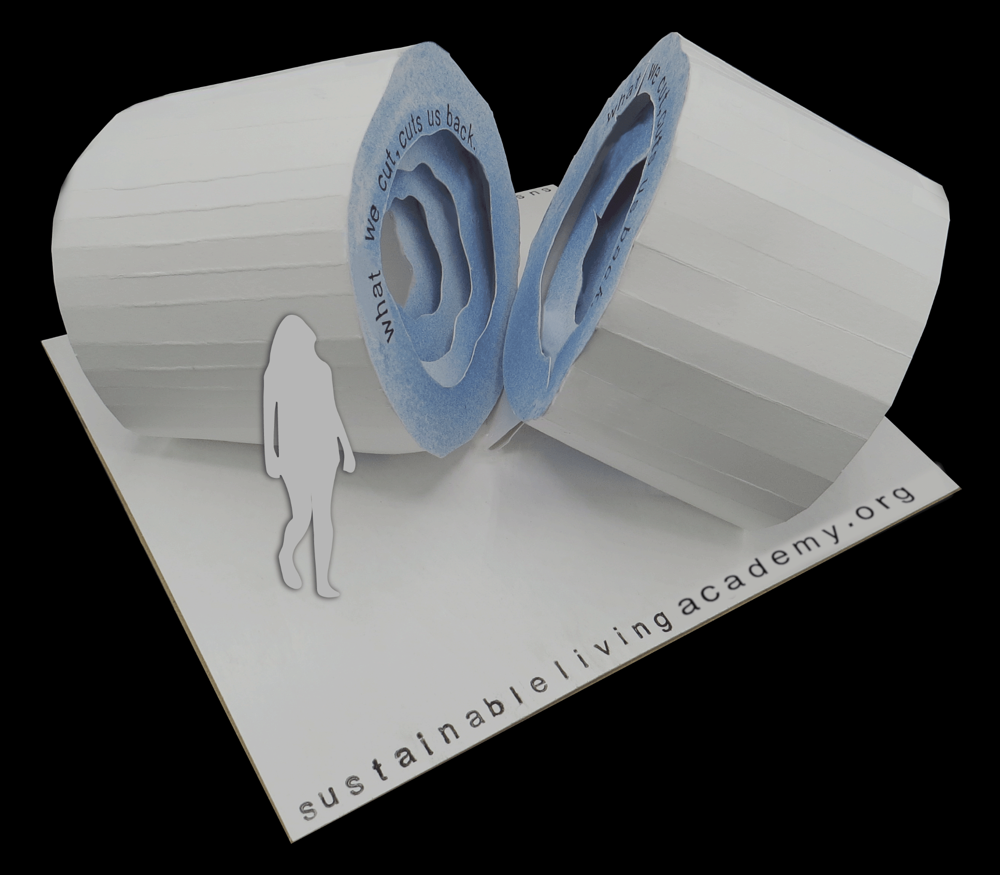

MORE PROJECTS

Main CO2 Polluters Brochure

Deforestation Sculpture

Graphic Designer
As a graphic designer, I strive to enhance our world by creating informational designs that are educational yet visually appealing. I have created posters advocating for climate change, the importance of voting, and the necessity of applying sustainable practices to our everyday lives; the few projects I have listed align with my goal of improving our world through education and advocacy. While most of my work showcases my goal to empower change in communities and our environment, I also enjoy developing designs that are equally as instructive yet more playful. When designing, I use alluring colors and graphics to call attention to my informative work. Ultimately, my mission as a designer is to use my creative skills to present positively impactful designs to the public.